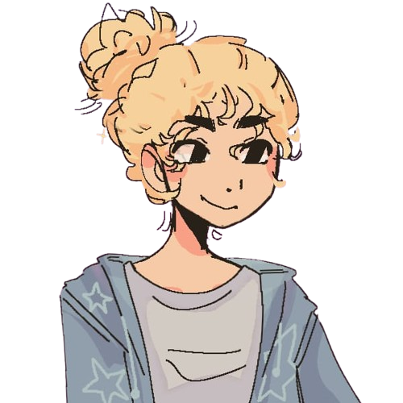

bibliografia
Oie, Meu nome é Julia, sou estudando da turma 1DA de TI.Esse é a segunda versao do meu site de rosto, aprendi muito sobre CSS e HTML dês de entao :3
Eu gosto de desenhar, pintar, e as vezes até esculpo. Gosto de assistir desenhos e series de fantasia, amo Pop e pop-rock e espero fazer um curso de animaçao quando crescer.